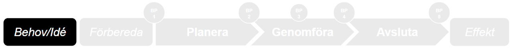

Behov/idé
Här hittar du information om stadiet behov/idé — det ingår inte i själva projektet då det ännu inte är startat, men det är upprinnelsen till ett projekt.

Identifiera behov, krav och förutsättningar
Upprinnelsen till ett projekt är ofta en idé om en förändring, ett nytt behov som uppstått eller ett krav som ska tillgodoses. Behovet kan komma från olika håll i verksamheten eller politiken, eller från lagkrav.
Syftet är att möjliggöra bedömning av behovet tillsammans med andra nya och befintliga initiativ — vilken verksamhetsnytta ska det bidra till och vad kommer det kosta?
Nu ansvarar beställaren för att identifiera behovet genom att ta reda på varför något behöver göras, vilken nytta det leder till och vad som händer om inget görs.
Om Ford i början av 1900-talet hade frågat människor vad de ville ha, hade de kunnat svara: Snabbare hästar. Det är inte alltid behovsägaren har klart för sig att de inte behöver mer av samma sak, utan kanske en annan lösning.
Vem fattar beslut?
Beställaren.
Lokalbehov — hur det fångas upp
I lokalförsörjningsprocessen fångas behov upp via nämndernas lokalförsörjningsplaner (10-årsplaner). Dessa samordnas av lokalstrateg och lokalsamordnare och bildar underlag för Lejonfastigheters planering.
En beställning av lokalbehov till Lejonfastigheter ska innehålla vilken säkerhetsnivå som ska gälla. Utifrån beställningen tar lokalutvecklare fram ett lokalprogram.
Kom ihåg: Lejonfastigheter behöver komma in tidigt i förvaltningarnas behovsanalyser och processer — det är ett av de identifierade "skaven" i det nuvarande samarbetet.
Jag vill veta mer!
För mer stöd i hur vi jobbar med behovsanalys — se kommunens interna resurser för behovsanalys och workshops. Kontakta Cecilia Stenberg på Utvecklings- och digitaliseringsenheten för stöd kring styrmodellen.